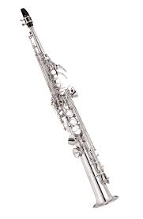

Ingresos Diarios
Dia
Lunes
$100
Martes
$120
Miercoles
$90
Small text
ADSIANOS
SMALL es un texto muuy pequeño
y Ahora va el autor
(Maria F Lozano)

Fig1. - SaxSoprano.
Aprendiz, digite su nombre de Usuario y su contraseña